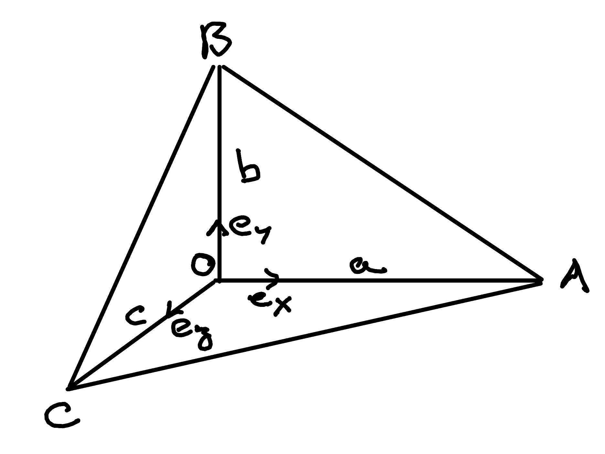

Proving De Gua’s Theorem with Clifford Algebra
by Stéphane Haussler
I just watched yet another great video by Michael Penn about De Gua’s theorem. Since I had never heard
of it and recently learned about Clifford Algebra as well as the Hodge dual, I
decided I would have a go at it that way. It felt a proof should work out
nicely, and it does!

The theorem states that with an orthogonal corner \(O\) and triangles set
up like in the illustration, then the areas follow the following rule:
\[A^2_{ABC} = A^2_{OBC} + A^2_{OAC} + A^2_{OAB}\]
Don’t hesitate to open an issue on my repository if something is not
as it should. You can also correct directly and I will definitely conside
merging your changes.
Taking the Clifford Product
Beginning with the Clifford product of \(\mathbf{CA}\) and \(\mathbf{CB}\):
\[\begin{split}\begin{align}
\mathbf{CA\;CB} = & (\mathbf{CO + OA}) (\mathbf{CO + OB}) \\
= & \mathbf{CO\;CO} + \mathbf{CO\;OB} + \mathbf{OA\;CO} + \mathbf{OA\;OB} \\
\end{align}\end{split}\]
Expanding both sides into dot and wedge products:
\[\begin{split}\begin{align}
\mathbf{CA} \cdot \mathbf{CB} + \mathbf{CA} \wedge \mathbf{CB}
= & \mathbf{CO} \cdot \mathbf{CO} + \mathbf{CO} \wedge \mathbf{CO} + \\
& \mathbf{CO} \cdot \mathbf{OB} + \mathbf{CO} \wedge \mathbf{OB} + \\
& \mathbf{OA} \cdot \mathbf{CO} + \mathbf{OA} \wedge \mathbf{CO} + \\
& \mathbf{OA} \cdot \mathbf{OB} + \mathbf{OA} \wedge \mathbf{OB} + \\
\end{align}\end{split}\]
Since \(\mathbf{CO}\) is aligned with itself, its wedge product is zero (but
not its dot product). Since we make the hypothesis of a right corner in
\(O\), all other dot products are zero.
\[\begin{split}\begin{align}
\mathbf{CA} \cdot \mathbf{CB} + \mathbf{CA} \wedge \mathbf{CB} = & + \mathbf{CO} \cdot \mathbf{CO} \\
& + \mathbf{CO} \wedge \mathbf{OB} \\
& + \mathbf{OA} \wedge \mathbf{CO} \\
& + \mathbf{OA} \wedge \mathbf{OB} \\
\end{align}\end{split}\]
Identifying the Bivector Part
We isolate the bivector part:
\[\begin{split}\mathbf{CA} \wedge \mathbf{CB} = \mathbf{CO} \wedge \mathbf{OB} + \mathbf{OA} \wedge \mathbf{CO} + \mathbf{OA} \wedge \mathbf{OB} \\\end{split}\]
With reference to the illustration, we use the area \(A\) and basis vectors \(\mathbf{e_i}\)
\[\mathbf{CA} \wedge \mathbf{CB} = - A_{OCB} \; \mathbf{e_z} \wedge \mathbf{e_y}
- A_{OAC} \; \mathbf{e_x} \wedge \mathbf{e_z}
+ A_{OAB} \; \mathbf{e_x} \wedge \mathbf{e_y}\]
And reorder
\[\mathbf{CA} \wedge \mathbf{CB} = + A_{OCB} \; \mathbf{e_y} \wedge \mathbf{e_z}
+ A_{OAC} \; \mathbf{e_z} \wedge \mathbf{e_x}
+ A_{OAB} \; \mathbf{e_x} \wedge \mathbf{e_y}\]
Taking the Hodge Dual
We take the Hodge dual of that expression:
\[\star \mathbf{CA} \wedge \mathbf{CB} = + A_{OCB} \; \star \mathbf{e_y} \wedge \mathbf{e_z}
+ A_{OAC} \; \star \mathbf{e_z} \wedge \mathbf{e_x}
+ A_{OAB} \; \star \mathbf{e_x} \wedge \mathbf{e_y}\]
Which results in:
\[\mathbf{CA} \times \mathbf{CB} = + A_{OCB} \; \mathbf{e_x}
+ A_{OAC} \; \mathbf{e_y}
+ A_{OAB} \; \mathbf{e_z}\]
Taking a unit vector \(\mathbf{n}\) normal to the \(ABC\) surface.
\[A_{ABC} \; \mathbf{n} = + A_{OCB} \; \mathbf{e_x}
+ A_{OAC} \; \mathbf{e_y}
+ A_{OAB} \; \mathbf{e_z}\]
Taking the squared norm, we have proven:
\[A^2_{ABC} = A^2_{OBC} + A^2_{OAC} + A^2_{OAB}\]
{kind=link}